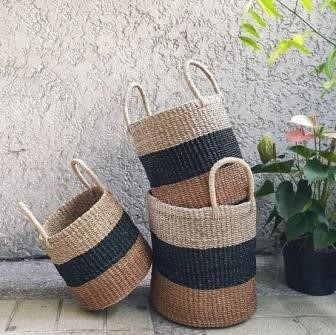
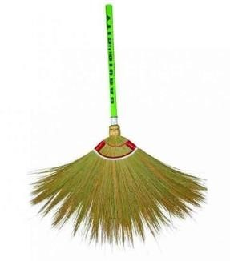
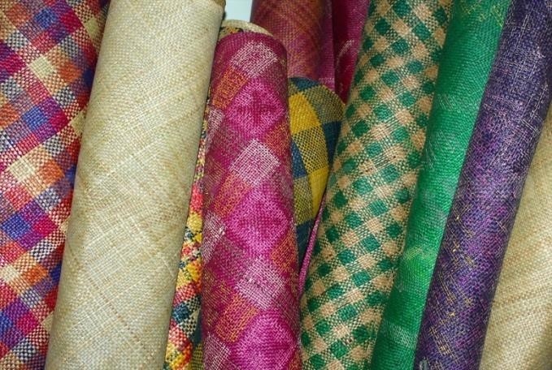
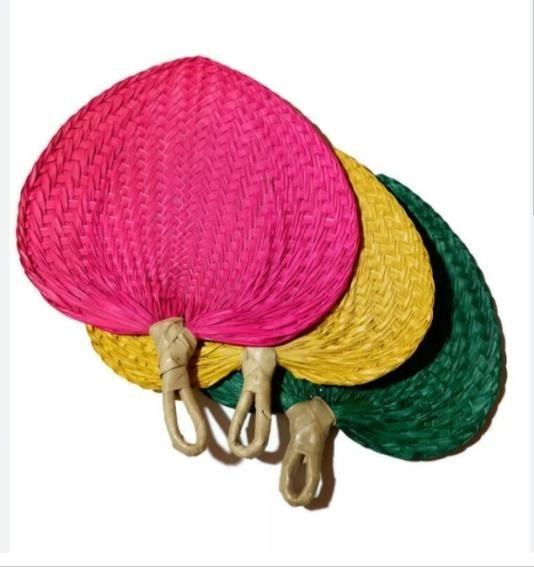
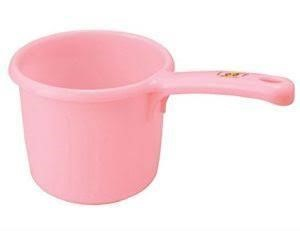
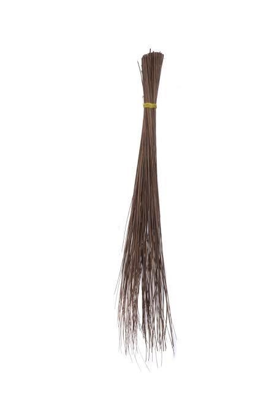

Our Popular Cultural Products

Every Filipino family owns at least one locally made item, such as a bamboo sofa set, broom, feather duster, cabinet, or other pieces of furniture. When you buy local products in the Philippines, you can be confident that your money is going to a local business that produces high-quality goods that are valuable to customers. The manufacturers and retailers of these items are undoubtedly able to give you with high-quality goods made with the greatest care. In addition to owning and caring for one of the many local products available, you also own and maintain the sweat and work of every Filipino who contributed to it.
10 Proudly Filipino-made products you can have in your home to support local brands and sellers
1. Abaca Basket
The Philippines is the world’s biggest provider of abaca fiber, supplying 87.5% of worldwide demand for it. Abaca is a kind of banana that is produced commercially in the Philippines. Abaca from the Philippines is considered the world’s strongest natural fiber. Abaca fibers may also be used to make a wide range of handcrafted items, including clothing, textiles, sporting goods, packaging materials, and ornaments.
2. Walis Tambo
Walis Tambo is a Philippine cultural icon. The Tambo is much more than a broom. It is a component of Filipinos’ daily lives. It results in a gleaming and clean floor. It is convenient and may be used anywhere in the house (but not the bathroom as a mop or a walis tingting might be more useful). The soft bristles are created from the phragmites reed known as tambo in the Philippines, thus the name walis tambo.
3. Banig
According to the website of the National Commission on Culture and the Arts (NCCA), banig is a traditional handwoven mat created in the Philippines. It is not, technically, a textile. Furthermore, the mat is composed of buri (palm), pandan or seagrass leaves, or native leaves, depending on the area in the Philippines. The leaves are dried and frequently colored before being chopped into strips and woven into mats that might be simple or elaborate.
4. Abaniko
The Abaniko is a Filipino cultural and traditional item meant for everyday usage. With its traditional woven design, this hand-held fan will also keep you cool in style. It’s ideal for summer, but you can also use it if there’s a brownout in your home. It is available at public marketplaces.
5. Tabo
The tabo has its origins in the pre-colonial period of the Philippines when our forefathers utilized it as an all-purpose household item. It was constructed from coconut and bamboo.
In the Philippines, the tabo is a piece of traditional hygiene equipment used mostly for scrubbing, bathing, and cleaning the bathroom floor. The tabo is most usually seen in the provinces, but it is also regularly used in cities.
6. Walis-Tingting
The broomstick has long been a part of Filipino life, with walis tingting being used for yard sweeping. It’s a broom constructed from thin palm leaf midribs. On one end, the rigid ribs are tied. It is typically used in conjunction with a simple dustpan, as seen in the image. A walis tingting is a broomstick fashioned from coconut midribs in Tagalog. The words “walis” and “tingting” refer to the midribs of the coconut leaves used to make the broomstick.
The Philippine Islands is home to many proud craftsmen and artisans. These are Filipinos who create world-class products using skills and tools that have been handed down through generations. In harmony with nature and with ingenuity, they use indigenous materials that abound in their communities. These treasures await travelers to the Philippines, as beautiful souvenirs that can be brought home along with memories of a relaxing getaway in this tropical paradise.

Reference:
https://www.bria.com.ph/articles/loving-local-best-filipino-made-products-to-add-to-yourhome/